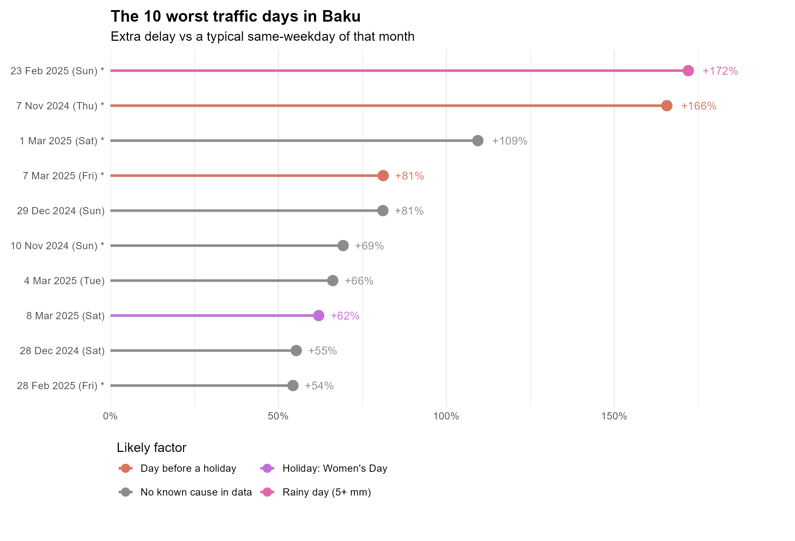
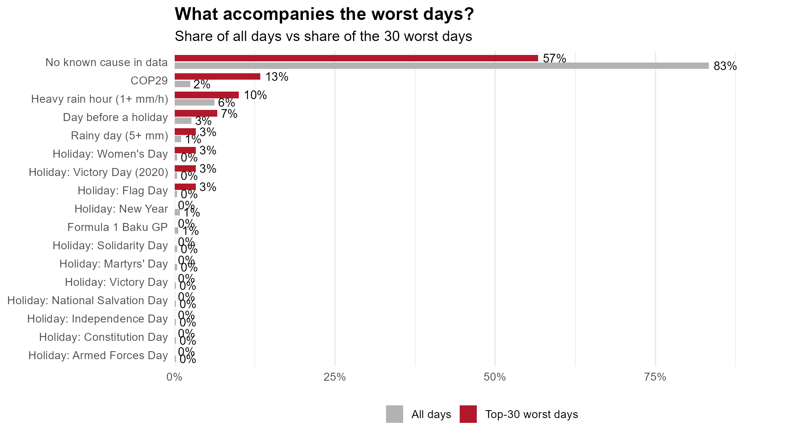

The ten worst days
Each day is compared with a typical day of the same weekday and month, then checked against holidays, big events and rain.



TODO: your finding, and a note on the early November 2024 days if you checked or excluded them.